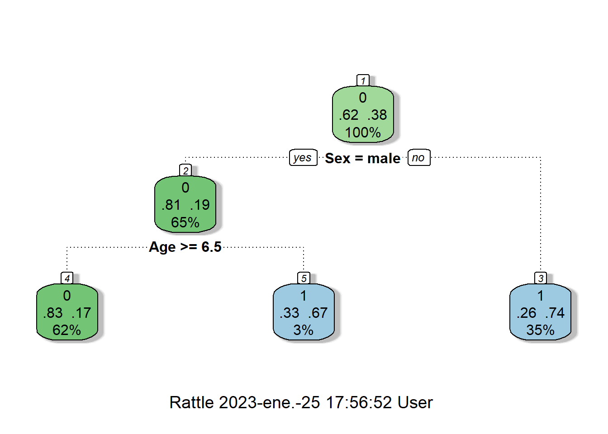

#install.packages('titanic')- LEMA: INTENTA, INSISTE Y RESISTE
- DESARROLLADA POR: DIANA MARÍA TORO LÓPEZ
- CURSO: R-STUDIO GRATIS
- INSTRUCTOR: RAFA GONZALEZ GOUVEIA
- ENTIDAD: youtube.com/@GonzalezGouveia
T3V2 - ARBOLES DE DESICIÓN PARA CLASIFICACION EN R
paquete de datos
cargar librarias de analisis
library(tidyverse)── Attaching packages ─────────────────────────────────────── tidyverse 1.3.2 ──
✔ ggplot2 3.4.0 ✔ purrr 1.0.1
✔ tibble 3.1.8 ✔ dplyr 1.0.10
✔ tidyr 1.2.1 ✔ stringr 1.5.0
✔ readr 2.1.3 ✔ forcats 0.5.2
── Conflicts ────────────────────────────────────────── tidyverse_conflicts() ──
✖ dplyr::filter() masks stats::filter()
✖ dplyr::lag() masks stats::lag()cargar librerias de datos
library(titanic)cargar datos
data ("titanic_train")visualizar datos
head(titanic_train) PassengerId Survived Pclass
1 1 0 3
2 2 1 1
3 3 1 3
4 4 1 1
5 5 0 3
6 6 0 3
Name Sex Age SibSp Parch
1 Braund, Mr. Owen Harris male 22 1 0
2 Cumings, Mrs. John Bradley (Florence Briggs Thayer) female 38 1 0
3 Heikkinen, Miss. Laina female 26 0 0
4 Futrelle, Mrs. Jacques Heath (Lily May Peel) female 35 1 0
5 Allen, Mr. William Henry male 35 0 0
6 Moran, Mr. James male NA 0 0
Ticket Fare Cabin Embarked
1 A/5 21171 7.2500 S
2 PC 17599 71.2833 C85 C
3 STON/O2. 3101282 7.9250 S
4 113803 53.1000 C123 S
5 373450 8.0500 S
6 330877 8.4583 Qcargar librerias para clasificacion
hace los calculos
#install.packages('rpart')
library(rpart)dar forma a la gráfica
#install.packages('rattle')
library(rattle)Loading required package: bitopsRattle: A free graphical interface for data science with R.
Versión 5.5.1 Copyright (c) 2006-2021 Togaware Pty Ltd.
Escriba 'rattle()' para agitar, sacudir y rotar sus datos.dar forma a la grafica
#install.packages('rpart.plot')
library(rpart.plot)modelando con arboles de decision
arbol <- rpart(
# Modelo que queremos entrenar
formula = Survived ~ Sex + Age,
# Datos donde tiene que buscar la información
data = titanic_train,
# Para que prediga sobre la clase
method = 'class')graficar el arbol
fancyRpartPlot(arbol)
prediciendo con el arbol
# Predecir sobre los datos con los que se hizo el modelo
# funcion para predecir o clasificar predict(arbol, type = 'class') para calcular el 0 o 1 sobre todos los datos
pred_arbol <- predict(arbol, type = 'class')crear dataframe con la prediccion
# combina la estructura de datos por columna, que tenga la misma cantidad de filas, como argumento se coloca la data original, junto con pred_arbol que es la variable con la funcion de predicción o clasificacion
titanic_pred <- cbind(titanic_train)¿un pasajero masculino de 4 años de edad sobreviviría?
predict(object = arbol,
newdata = data_frame(Age = 4,
Sex = 'male'),
# Calcular el 1 o el 0
type = 'class')Warning: `data_frame()` was deprecated in tibble 1.1.0.
ℹ Please use `tibble()` instead.1
1
Levels: 0 1